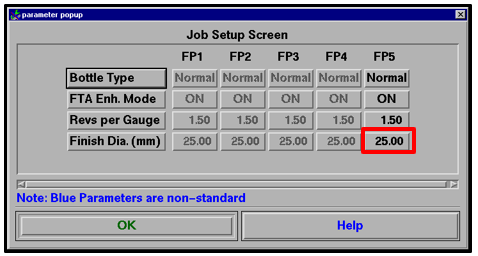
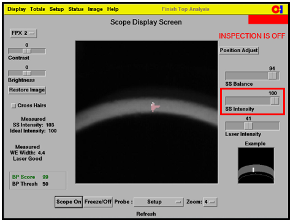

Instructions
-
Before starting the work instruction activity, perform the following steps:
- Do not begin these tasks without confirmation that personnel directly involved have completed the required training associated with the work instruction activity and have reviewed this document.
- Gather necessary tools and equipment as identified below in the Equipment Section.
- Wear and use additional Personal Protective Equipment (PPE) and safety equipment required for this specific work instruction.
- Obey all applicable safety requirements and procedures.
- Notify appropriate personnel of the activity and estimated time needed to complete the tasks.
- Follow all Lockout/Tagout procedures when work instruction activity requires isolating energy in the designated area. Verify energy is isolated before starting work.
-
Prior to the Job Change or FTA setup, perform the following steps:
-
Monitor the production flow to ensure that the machine is properly set up in
accordance with the appropriate Container Handling Work Instruction:
- INS-03-013 (FP without Plug Gauge)
- INS-03-014 (FPX)
- INS-03-015 (FPX2)
- INS-03-018 (FP with Plug Gauge)

-
Monitor the production flow to ensure that the machine is properly set up in
accordance with the appropriate Container Handling Work Instruction:
-
To set up the Headplate, perform the following steps:
-
For the mechanical setup of the FTA Head Assembly, perform the following steps:
-
Select Image > Scope from the FTA Main Menu to display
the Scope Screen.

-
While monitoring the Scope Screen, slightly loosen the Locking Screw and
adjust the position of the Head Assembly left/right using the Adjustment Screw
until the sealing surface image is horizontal as in the image shown. When
finished, tighten the Locking Screw.
- Locking Screw (left / right)
- Adjustment Screw (left / right)

-
While monitoring the Scope Screen, loosen the Locking Screws (recessed) and
adjust the position of the Head Assembly in/out using the Adjustment Knob until
the sealing surface image is vertically centered as in the image shown. When
finished, tighten the Locking Screws.
- Locking Screws (in / out)
- Adjustment Knob (in / out)

-
While monitoring the Scope Screen, slightly loosen the Locking Screws and
adjust the position of the Head Assembly up/down using the Adjustment Screw
until the vertical Wire Edge laser line is centered as in the image shown. When
finished, tighten the Locking Screws.
- Locking Screws (up / down)
- Adjustment Screw (up / down)

-
Select Image > Scope from the FTA Main Menu to display
the Scope Screen.
-
To adjust the FTA light settings, perform the following steps:
-
Adjust the Sealing Surface Balanceslider to obtain an even contrast
throughout the image from top to bottom.


-
Adjust the Sealing Surface Intensity slider until the Measured SS
Intensity reads between 80 and 90.

-
Adjust the Sealing Surface Balanceslider to obtain an even contrast
throughout the image from top to bottom.
-
For the software setup of the FTA, perform the following steps:
-
Verify that theBottle Type is set toNormal.
- Selecting the Bottle Type will reset all the FTA settings to their default values.
- Choose the proper type of finish as needed.

-
Press the Finish Diameter button corresponding to the
active FP and use the numeric keypad popup to specify the container’s finish
diameter.
- The value must be entered in millimeters even if the system is not set to metric.
- Wide angle lens should not be used on standard finishes. If a wide angle
lens is used, set the finish diameter as follows:
- Less than 50 millimeters, set the value to 70% of the actual diameter.
- More than 50 millimeters, set the value to 35 millimeters.


-
Verify that theBottle Type is set toNormal.
-
To fine tune the mechanical setup of the FTA Head Assembly as needed, perform the
following steps:
-
Press Status > Pockets to display the FTA Pocket
Screen.

-
Clear out all the totals by pressing the Clear
button.

-
Start the machine (ensure production ware is available at the infeed).
- The numbers shown in the lower left are the values obtained for the individual pockets of each machine and an average for all the pockets.
- The numbers shown in the upper left are the minimum / maximum values obtained during the 15 minute inspection interval.
- As the containers travel through the pockets, each gray number will turn black, yellow, or red when a sufficient number of containers have passed.
- The numbers will display black when acceptable, yellow when approaching a limit, or red when the limit has been exceeded. The FTA Head is properly adjusted when all these numbers are black.


-
Adjust the FTA Head according to the instructions in the Adjust Head
popup.
- Continue to monitor the values and perform additional adjustments of the FTA Head until the percentages associated with each of the three Head Adjustments are as close to zero as possible.

-
Use the “First 10” option in the Trap screen to obtain multiple trapped
images.

-
Press the Set Trap button.

-
Review each image to ensure that the finish is properly centered.

-
Press Status > Pockets to display the FTA Pocket
Screen.
-
To verify the consistency of the Initial Intensity values (once all the machines on the line are set up), perform the following steps:
-
Verify the Initial Intensity values are within ±5 for all the machines. If
any of the values are outside of this range, perform Work Instruction
INS-03-030 Finish Setup - Soul - FTA Intensity Balance.

Note:If any of the Initial Intensity values are significantly lower than other values on the line, (70 in the above example), and the Sealing Surface Intensity value must be adjusted to near 100 to obtain the desired measured intensity, this may indicate that the FTA Head needs servicing.

-
Verify the Initial Intensity values are within ±5 for all the machines. If
any of the values are outside of this range, perform Work Instruction
INS-03-030 Finish Setup - Soul - FTA Intensity Balance.
-
Upon completion of tasks, perform the following steps:
- Replace protective guarding and close safety interlock gates.
- Confirm the designated work area is clear and communicate to personnel the intent to restart energy.
- After the designated work area is confirmed clear and personnel are aware of the pending restart, follow all Lockout/Tagout procedures to restart energy supplied to the designated area. Verify energy is active.
- Remove signs and markings from the designated work area.
- Perform basic housekeeping duties. Clean up the work space, tools and equipment. Dispose of trash. Put tools and equipment in assigned area.
- Notify appropriate personnel that the work instruction activity has been completed.